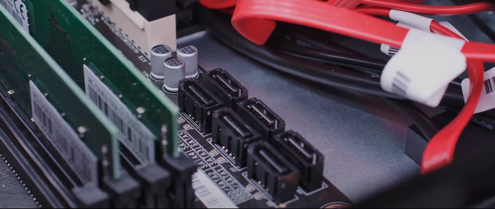

Por primera vez en mucho tiempo, la compañía Huawei nos ofrece un nuevo linaje de computadoras sin Intel, AMD y Apple con Hardware y software totalmente chino. Semanas atrás Apple anunciaba su salto a procesadores propios basados en ARM para dejar a un lado la dependencia de Intel. Este movimiento no es único y desde luego tampoco el primero. Huawei en la otra parte del mundo, ha puesto a la venta también un ordenador con procesador marca de la casa y basado en ARM. Pero entonces surgen las preguntas surgen enseguida. Si no tiene un procesador Intel o AMD Ryzen, ¿qué procesador usa? Y si no tiene Windows... ¿funciona con Linux u otro sistema propio? Podrás informarte sobre todo esto cómodamente desde Tecno Expand, tu espacio tecnológico preferido.
Huawei hace tiempo que fabrica servidores para centros de datos a través de su subsidiaria HiSilicon, que también fabrica los procesadores de sus móviles. Pero es la primera vez que pone a la venta un PC de sobremesa destinado a los usuarios domésticos. Este desktop PC de Huawei dispone de un procesador Kunpeng 920 con tecnología de 7 nm. Es un procesador ARM de ocho núcleos a 2.6 GHz, soldado a la placa base Huawei D920S10.
Ahora bien, ¿qué ofrece un PC propio de Huawei por 950 euros? Especificaciones algo modestas teniendo en cuenta el precio. Entre algunas de sus características encontramos:
El ordenador tiene problemas de rendimiento y compatibilidad. No soporta aplicaciones de 32 bits, y otras como las de Adobe, dan muchos problemas. Incluso le cuesta reproducir vídeo a resolución 4K. Recomiendan usarlo solo para aplicaciones de ofimática no muy exigentes.
Como es lógico, a las compañías chinas aún les queda mucho para poder prescindir completamente de la tecnología norteamericana. Y lo mismo puede decirse en sentido contrario.
Se le realizan diferentes pruebas de rendimiento al ordenador de Huawei. Entre ellas un renderizado en Blender (programa para modelado en 3D) de un coche donde requiere de casi 12 minutos para la tarea. A la hora de reproducir vídeos también sufre debido a los codificadores que utiliza.
Sin duda alguna el factor más limitante es el software, al no poder instalar aplicaciones de 32 bits y depender de la tienda de apps de UOS que tiene un catálogo bastante limitado.
Actualmente Huawei ya apuesta por procesador propio para sus teléfonos estrella. La compañía poco a poco ha ido independizándose de otras compañías para sus productos, por voluntad propia o por obligación. La última prueba de ello son los smartphones Huawei sin los servicios de Google instalados, algo que limita el uso en Occidente. Huawei también se ha planteado crear un sistema operativo propio con HarmonyOS y no está pensado sólo para teléfonos sino también para funcionar en ordenadores. Quizás lo veamos algún día en un PC que venga con un chip Kunpeng. De todos modos, si vamos a ver más PCs con procesadores propios de Huawei o no por ahora es una incógnita.
Siguenos en Facebookpara mas novedades de Huawei.
Quizas te puede interesar Este video